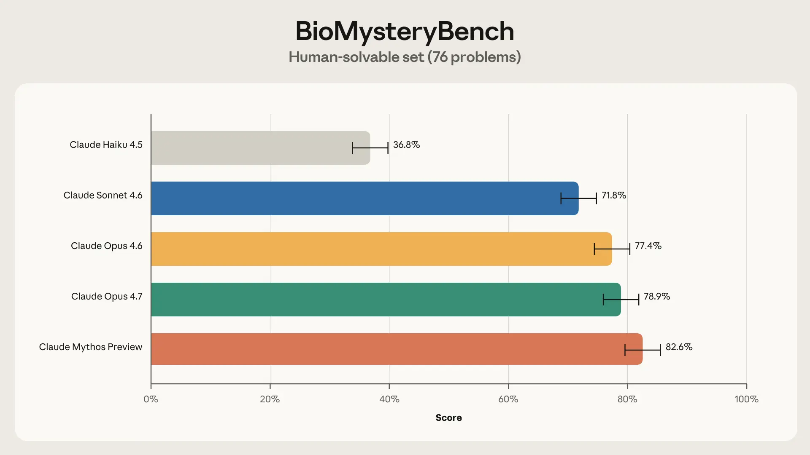
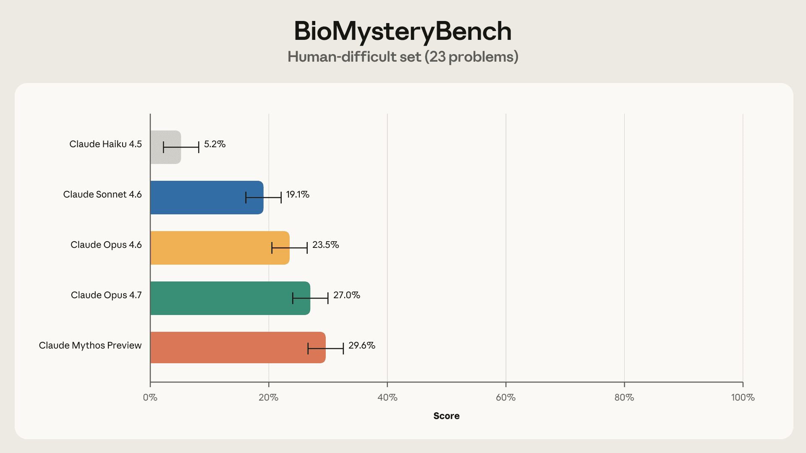

This post describes BioMysteryBench, a benchmark developed by Anthropic to evaluate Claude's capabilities in bioinformatics research. It tests models on real-world, messy biological datasets, requiring them to perform analyses similar to human experts. The benchmark addresses challenges such as multiple valid approaches, subjective decisions in noisy data, and questions that humans cannot yet answer. Results show that Claude's scientific capabilities are improving rapidly, with current models performing on par with or exceeding human experts on many tasks, sometimes using different strategies. The work highlights the need for benchmarks that capture the complexity of scientific discovery beyond standard knowledge tests.
本文介绍了Anthropic开发的BioMysteryBench基准，用于评估Claude在生物信息学研究中的能力。该基准使用真实且复杂的生物数据集，要求模型像人类专家一样进行分析。它解决了多个有效方法、噪声数据中的主观决策以及人类尚未解答的问题等挑战。结果显示，Claude的科学能力快速提升，当前模型在许多任务上与人类专家相当甚至超越，有时采用不同策略。这项工作强调了需要能够捕捉科学发现复杂性的基准，而非仅仅知识测试。
![Fig 3. Per-problem solve consistency on BioMysteryBench. Each model attempted every problem five times; bars show the share of problems solved 0, 1, 2, 3, 4, or 5 times out of 5. On the human-solvable set (left), all three models are strongly bimodal—problems are almost always solved either every time or never. On the human-difficult set (right), the middle of the distribution fills in: a much larger fraction of each model's correct answers come from problems it solves only once or twice in five tries, indicating that difficult-set wins are often lucky reasoning paths rather than reliably reproducible solutions.](figures/1235/fig_14.png)

